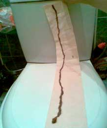
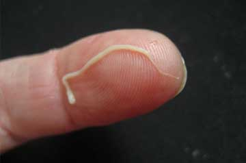
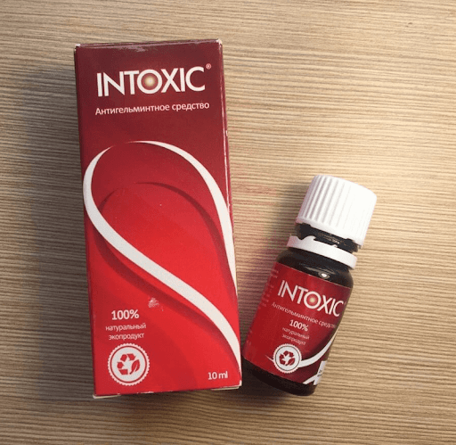

ПАПИЛЛОМЫ - ВНЕШНИЙ ПРИЗНАК ТОГО, ЧТО ВАС ПОЕДАЮТ ЗАЖИВО!
ЕСЛИ НА ШЕЕ, ПОДМЫШКАХ ИЛИ ТЕЛЕ В ЦЕЛОМ ЕСТЬ ПАПИЛЛОМЫ – ПАРАЗИТЫ ПОЕДАЮТ ВАШИ ОРГАНЫ!
ПАПИЛЛОМЫ - ВНЕШНИЙ ПРИЗНАК ТОГО, ЧТО ВАС ПОЕДАЮТ ЗАЖИВО!
ЕСЛИ НА ШЕЕ, ПОДМЫШКАХ ИЛИ ТЕЛЕ В ЦЕЛОМ ЕСТЬ ПАПИЛЛОМЫ – ПАРАЗИТЫ ПОЕДАЮТ ВАШИ ОРГАНЫ!
Если у человека на коже есть папилломы – в его внутренних органах обосновались колонии смертельных паразитов, медленно поедающих его плоть.
По статистике более 1 миллиарда человек заражено паразитами. Самый точный способ диагностики заражения – высыпание папиллом.
Корнелюк Виктория Валерьевна
Доцент, к.м.н. – руководитель Научно-исследовательского института медицинской паразитологии и тропической медицины им. Е.И. Марциновского. Более 20 научных работ по молекулярной паразитологии. Ответственный исполнитель 11 государственных контрактов в рамках ФЦП «Химическая и биологическая безопасность России», исполнитель проектов ИНТАС по молекулярной диагностике лейшманиозов
Лечебная практика: более 15 лет
От редакции: В институте медицинской паразитологии и тропической медицины открыли реальную причину появления папиллом на теле человека: заражение смертельными паразитами. Недавно завершенные исследования сообщили, что продукты жизнедеятельности паразитов токсичны и формируют в желудке благоприятную среду для развития гнилостных бактерий. Именно по этой причине у людей, зараженных паразитами можно наблюдать высыпание папиллом на теле человека.
Сегодня мы поговорим об этом с главой Института Паразитологии РФ Корнелюк Викторией Валерьевной.
Корреспондент: Виктория Валерьевна, добрый день! Начну с главного вопроса, это правда, что Россия – лидер по заражению населения паразитами?
Виктория Валерьевна: Да. Россия занимает лидирующие позиции в рейтинге заражения паразитами. Виной тому крайне плохая экологическая обстановка, бездействие властей и наплевательское отношение к людям.
Каждый год миллионы людей умирают из-за болезней спровоцированных паразитами. При этом, если «поднять» заключения о смерти, то в большинстве случаев там будет написано что угодно, но только не "смерть из-за паразитов". Исключения очень редки и как правило это ситуации, когда игнорировать заражение невозможно, например, все сердце забито червями и от этого не отмахнуться. Местным медицинским властям невыгодно признавать высокий уровень заражения населения паразитами и тот факт, что около 89% всех смертей происходят из-за них. К тому же болезни, спровоцированные паразитами, вынуждают людей обращаться в клиники, покупать препараты, лечиться. Это колоссальный рынок на сотни миллионов рублей. Я надеюсь вы умеете читать между строк и понимаете, как это может быть взаимосвязано.
Корреспондент: Виктория Валерьевна, папилломы действительно являются признаком заражения паразитами?
Виктория Валерьевна: Да. Сразу несколько исследовательских групп сошлись в одном, именно продукты выделения паразитов приводят к появлению папиллом на коже человека. Причем, если на коже высыпают папилломы, это означает, что первый рубеж обороны организмом проигран и внутри вас прямо сейчас размножаются личинки паразитов. То есть по сути, каждый человек у которого на коже высыпали папилломы, уже находится в смертельной опасности.
И повторюсь, около 89% всех смертей, включая так называемые "естественные" имеют одну причину – паразиты, медленно поедающие человека изнутри.
Корреспондент: Обычно под паразитами понимают банальных глистов, как они способны привести к смерти человека?
Виктория Валерьевна: Это большое заблуждение считать, что паразиты человека – это исключительно глисты. Существует большое количество разнообразных паразитов, живущих в разных органах и приводящих к самым разным последствиям. Да и глисты, а если быть точным гельминты – опасные паразиты. Они в буквальном смысле разрушают кишечник, приводя к его гниению и в конечном итоге – к смертельному исходу. И к слову, даже гельминтов достаточно сложно обнаружить и уничтожить.
Наряду с ними существуют тысячи паразитов, которые могут жить в вашей печени, мозгу, легких, крови, желудке. И практически все они смертельны. Часть из них сразу начинает действовать агрессивно и разрушает организм. Часть – до поры до времени действует незаметно, пока их количество не станет таким, что организм-носитель уже не может выдерживать и человек умирает. Они провоцируют массу смертельных осложнений: инфаркты, раковые опухоли, цирроз печени, нефрит, разложение почек и сотни иных, более редких, но не менее смертельных.
При этом, я с уверенностью могу сказать, что паразитами заражены практически все. Просто большинство из них крайне трудно обнаружимы. А когда появляются последствия заражения паразитами, то врачи пытаются лечить именно их. Даже при вскрытии тел, для обнаружения значительной части паразитов нужны специальные анализы.
Единственный универсальный симптом, который точно определяет заражение человека паразитами – это высыпание на коже папиллом.
Корреспондент: Вы можете привести какие-то конкретные примеры заражения паразитами?
Виктория Валерьевна: Я могу рассказать сотни случаев. Но, пожалуй, остановлюсь на тех, которые наиболее понятно продемонстрируют всю опасность паразитов.
1. Ситуация в которой пациенту повезло. Он пришел с жалобой на боли в животе, которые были у него время от времени, но сильно не беспокоили. Обследование показало, что весь кишечник забит гельминтами. Они буквально выели там целый лабиринт, уже пошел процесс гниения и человек был близок к сепсису. В процессе операции удалили часть кишечника, вычистили гельминтов, убрали гниющие ткани. И после недели в реанимации он успешно встал на ноги.
2. Матка внутри которой поселилась колония паразитов. К сожалению убрать их уже не представлялось возможным, так как паразиты и их личинки по сути полностью заполнили матку и увеличили ее в объеме, в несколько раз. Поэтому ее пришлось удалить. Женщину, к счастью, получилось спасти. Хотя отравление организма оказалось слишком тяжелым, после удаления матки она проходила специализированную терапию, но в итоге все равно умерла через 3 года.
3. Эхинококковые кисты сердца. Заражение пациента эхинококками было обнаружено слишком поздно. Лечащий врач полагал, что у него просто ишемическая болезнь сердца и стенокардия, но правда оказалась куда более жестокой. Оперировать было уже бесполезно, а консерватиное лечение не принесло плодов. Заменить сердце тоже не получилось – не было доноров. В итоге пациент скончался не приходя в сознание.
Корреспондент: Каким образом человек может понять, что заражен паразитами?
Виктория Валерьевна: К сожалению, можно констатировать, что на сегодняшний день не существует каких-то действительно точных инструментов для диагностики паразитов внутри человека. Это связано с наличием большого количества видов паразитов (более 2000 видов о которых нам известно), а также с крайне высоким уровнем сложности их обнаружения. Процедура полного анализа на паразитов в России доступна буквально в нескольких местах и стоит больших денег.
Первые симптомы, по которым можно сказать, что у вас в организме живут паразиты, это:
- Главный симптом – папилломы на теле;
- Неприятный запах изо рта;
- Аллергия (высыпания, слезящиеся глаза, насморк);
- Высыпания и покраснения на коже;
- Частые простуды, ангина, заложенность носа;
- Хроническая усталость (Вы быстро устаете, чем бы ни занимались);
- Частые головные боли;
- Запоры или понос;
- Боли в суставах и мышцах;
- Нервозность, нарушение сна и аппетита;
- Темные круги, мешки под глазами;
При наличии хоть одного из симптомов – с вероятностью в 99% можно сказать, у вас в организме присутствуют паразиты. И с ними нужно срочно бороться!
Корреспондент: Как люди могут избавиться от паразитов и уберечь себя?
Если же говорить о лекарствах, то тут всё проблематично. Безусловно, существуют какие-то узкоспециализированные препараты, способные очистить организм, скажем от тех же гельминтов. Есть более-менее эффективные лекарства против некоторых видов сердчечных червей и паразитов печени. Основная проблема с ними состоит в том, что они действуют только на какой-то один определенный вид паразитов. Тогда как каждый человек заражен 7-8 видами, как минимум. Если брать средние цифры, то получается по 11-14 видов паразитов на каждого зараженного. И это, если брать только тех людей, у которых получилось пройти полноценное лабораторное исследование на паразитов.
Единственный препарат, который является универсальным и позволяет очистить организм от паразитов полностью – это "Intoxic". Он завершил клинические испытания в прошлом году и показал просто потрясающие результаты. Экспорт препарата запрещен вплоть до того момента, пока препарато не будет полностью обеспечено население России.
Корреспондент: Чем так хорош "Intoxic"? Он чем-то отличается от других вариантов очистки организма от паразитов?
Виктория Валерьевна: Это единственное работающее средство очистки организма от паразитов в мире. Именно поэтому за ним гоняются международные аптечные сети и фармацевтические компании. По сравнению с другими антипаразитарными препаратами, "Intoxic" работает сразу против всего спектра паразитов, которыми могут быть заражены люди. Я уже говорила, что практически невозможно понять, какими именно паразитами заражён человек. А "Intoxic" уничтожает и "выметает" из организма паразитов, живущих где угодно – от головного мозга и сердца до печени и кишечника. На такое не способен больше ни один из существующих сегодня препаратов.
К тому же это не химическое лекарство, а полностью натуральный продукт, исключающий аллергическую реакцию, нарушение баланса кишечника и другие проблемы, возникающие при лечении классическими таблетками, которые ещё и нагружают организм, заставляя его перерабатывать массу разнообразных химических соединений.
1. Эффективность "Intoxicа", подсчитанная по стандартной методике (количество выздоровевших к общему
числу больных в группе из 100 человек, проходивших курс лечения) составила:
– Устранение гельминтоза и яиц – 99%.
– Нормализация функций и состояния поджелудочной – 80%.
– Устранение аллергического дерматита – 90%.
– Устранение гастрита, язвы, диареи – 90%.
– Устранение анемии – 99%.
– Устранение папиллом и наростов – 99%.
2. Нежелательных побочных эффектов, в том числе аллергических реакций не выявлено.
3. "Intoxic" признан ведущим препаратом в борьбе с паразитами в организме человека.
Помимо России, препарат прошёл сертификацию в Европе в Парижском университете паразитологии. Клинические испытания полностью подтвердили российские данные. Французы даже получили более высокий процент выздоравливающих. И сейчас завершаются циклы клинических исследований в Китае, Японии и Вьетнаме. Азиатские страны проявляются весьма живой интерес к препарату. Все без исключения испытания показали, что средство обладает чрезвычайно высоким уровнем эффективности.
Корреспондент: Я думаю, нашим читателям будет интересно услышать как приобрести "Intoxic" по специальной программе?
Виктория Валерьевна: Пока программа работает в ограниченном режиме. По мере того, как партия препарата, подготовленная для определенного региона, подходит к концу, он "выключается" и ждет своей следующей очереди. Как и говорили ранее, по ней "Intoxic" можно получить совершенно бесплатно.
Все, что требуется сделать для получения "Intoxicа" – это оставить заявку на сайте программы, указав свое имя и номер телефона, чтобы с вами могли связаться сотрудники консультационного центра. Каждый город отключается автоматически. Поэтому если вы видите, что есть возможность оставить заказ – значит препарат разобрали еще не полностью. И я лично гарантирую, что все люди оставившие заявки, обязательно получат свой препарат.
Корреспондент: Виктория Валерьевна, может, вы хотите сказать что-то нашим читателям перед тем, как мы закончим интервью?
Виктория Валерьевна: Единственное, что хочется сказать – не спешите умирать рано. Вы можете и не подозревать этого, но внутри вас с вероятностью в 97-98% живут паразиты. Они могут быть где угодно: в крови, кишечнике, легких, сердце, мозге. Паразиты в буквальном смысле поедают вас изнутри, заодно отравляя организм. В итоге появляются многочисленные проблемы со здоровьем, сокращающие жизнь на 15-25 лет. Это если не говорить о массе внезапных смертей, которые тоже обычно связаны с воздействием паразитов на человеческий организм. Не ждите пока станет слишком поздно и личинки паразитов будут копошиться у вас в теле. Очистите свой организм прямо сейчас. Мы сделали со своей стороны абсолютно всë, чтобы это мог сделать каждый человек.
Понравилась статья? Поделитесь с друзьями!




И посылка пришла очень быстро.
С уваженим, Виктория
Там отличные условия действуют, торопитесь!
Очень быстро перезвонили и заказ подтвердили. Страшно жить с таким внутри.
С уваженим, Виктория
С уваженим, Виктория
И остерегайтесь, пожалуйста, подделок.
С уваженим, Виктория
Начата проверка по факту 10 542 смертей из-за паразитов.
Печень девушки за полгода сожрали ленточные черви.
В чём сложность очистки организма от паразитов и удаления папиллом.